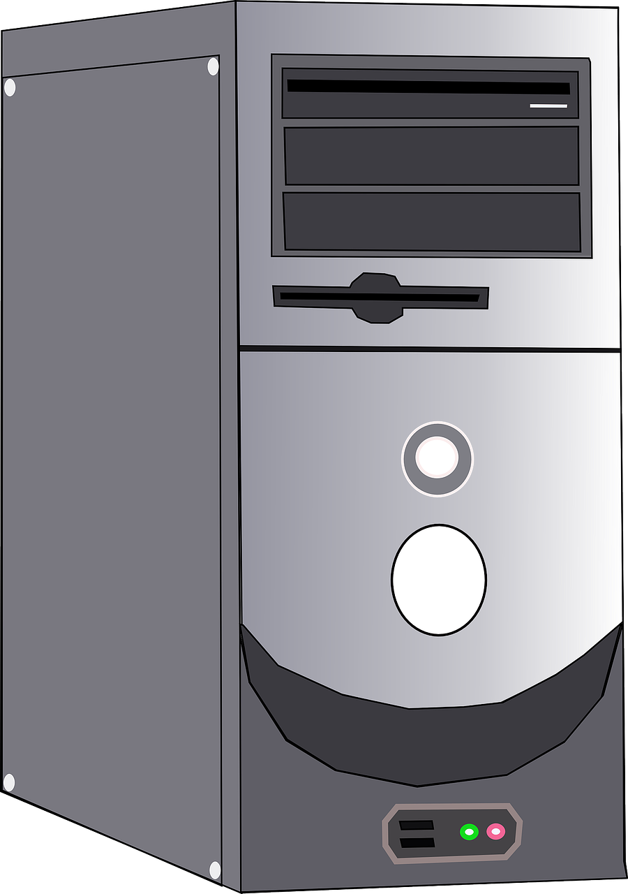

Vad är en Chassi?
En chassi är den yttre ramen av datorn som håller in alla komponenter och som man kan säga är skalet av datorn. Det skyddar komponenterna från bland annat damm och bidrar till att hålla komponenterna i datan svallare. Det är chassin du ser när du kollar på en data.
Startsida
